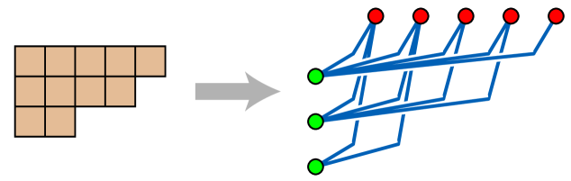

The Ferrers bound for spanning trees in bipartite graphs
Ehrenborg conjectured that every connected bipartite graph G with parts of size m and n has at most (1/mn) times the product of all vertex degrees spanning trees, with equality if and only if G is a Ferrers graph. This bound generalizes known results on spanning tree counts.
The authors prove Ehrenborg's conjecture by establishing the upper bound on the number of spanning trees in connected bipartite graphs and characterizing the equality case. The proof is fully formalized in Lean 4, providing a machine-checked verification of both the inequality and the characterization of Ferrers graphs as the unique extremal case.

The conjecture is confirmed: every connected bipartite graph with parts of size m and n satisfies tau(G) <= F(G) = (1/mn) * prod(deg(v)), with equality iff G is a Ferrers graph. The entire proof is formally verified in Lean 4.